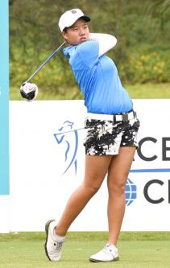

The Origin
Eun-Hee JI first Started golfing when she was 13 years old. The person that most influenced her to play golf was her father.
Some things she likes to do in her free time other than golf is listening to music.
Tournaments and Victories
LPGA Tour Victories( 3 wins, 1 major)
- 2008 Wegmans LPGA
- 2009 U.S Women's Open
- 2017 Swinging Skirts LPGA Taiwan Championship presented by CTBC
- 2018 Kia Classic
Career Highlights
- In 2016 Eun-Hee got three top-10 finishes including a season-best tie for third in the U.S Women's Open
- In 2015 Recorded two top-10 finishes
- Golfed in 29 events, 20 cuts made
- In 2014 she recorded five top-10 finished
Fun Facts about Eun-Hee JI
- She was born May 13th 1986
- She is 5ft 4in
- She is from South Korea
- She attended Chung-Ang University
- She turned professional in 2004
